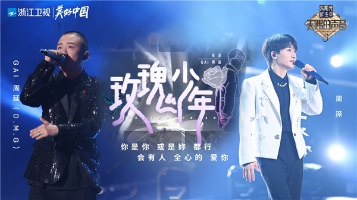
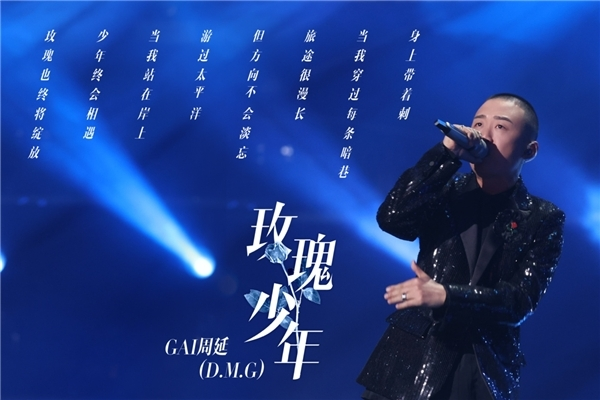

浙江卫视音乐综艺《天赐的声音》第三季第三期，终于迎来GAI周延与周深合作的《玫瑰少年》高能舞台。在节目未正式播出前，就有爆料称整个节目组、鉴音团以及现场观众都被震撼感动到哭，直接将大家的期待值拉满。序曲还未奏响，关于这首歌的讨论就已经到达一个小高潮。4月1日晚GAI周延和周深的这曲《玫瑰少年》如期而至，站在舞台上用尽全力歌唱的两位玫瑰少年，唱到动情处热泪涌入眼眶，而屏幕内外的观看者，完完全全沉浸在这直击灵魂的歌声中，歌手内心的声音凝成歌词与音符落在每一个人的泪点上，也传递出激励人心的治愈力量。
从歌曲发布后的收听数据来看，360%的飙升度足以证明这首歌的受欢迎度，《玫瑰少年》毫无悬念登顶QQ音乐巅峰榜，光明日报评《玫瑰少年》：两种不同的演唱风格融合，让《玫瑰少年》迸发出了不一样的力量。
歌曲改编自2018年蔡依林&阿信创作演唱的《玫瑰少年》，此次GAI周延与周深的演绎，也收获了很多关注者的力挺：这首歌从其诞生时就被赋予了一定的社会意义和社会责任，无论近些年谁翻唱，多少都会引发大家对歌曲背后意义的讨论及思考。作为公众人物，尤其以这样特殊个人背景经历，敢于拿这首歌出来翻唱，这本就是极其勇敢和强大的表现。
电影《无问西东》中有一句话“这个世界缺的不是完美的人，而是从心底给出的真心、正义、无畏与同情。”这句话也在GAI周延深情唱着《玫瑰少年》的时候浮现出来，歌中有他自己被质疑被孤立被“言语推上绞架”的实际遭遇与奋而崛起的内心世界，刚正又柔软。当回望过去的自己，他对自己这样说：盖哥，你好，我是13年后的你，我知道你心里一直有音乐的梦扎根在心里，不要着急不要迷茫，在实现梦想的道路上，你会遇到误解，他人言语的伤害，周遭环境的漠视，他们会觉得你是个怪人，一个不合逻辑的怪人，我想说，你一定要坚强、勇敢、独立、善良，坚持你做的每一件事，你会获得你最终想获得的幸福，爱你的人请继续爱，前进吧少年，前进吧盖哥。
GAI周延和周深，用自己感同身受的经历为这首《玫瑰少年》注入鲜活的生命能量，对所有从歌曲中感受到共振的你投以真挚的拥抱。如节目组导演所言：《玫瑰少年》唱出了曾经的不被理解和不被善待的心声，唱出了现在继续坚持和继续奋斗的信念。希望大家温柔以待，勇敢绽放。“少年终会相遇，玫瑰也终将绽放”你我并不孤单，愿每一个听到这首歌的人都能从歌声中汲取勇敢前行的力量。